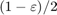

Demonstration of extended time-delayed feedback control on Hopf normal form
Author: Jan Sieber
Consider the Hopf normal form with single control input
(thus, .) We construct time-delayed feedback control of the form
where (both, and have two components)
The bifurcation diagram and the stability of the system with delay are computed using DDE-Biftool version 3.1, available from
https://sourceforge.net/projects/ddebiftool/files/dde_biftool_v3.1.zip/download
This demo is used as an illustrative example in
Sieber: Generic stabilisability for time-delayed feedback control, Preprint download at http://arxiv.org/abs/1508.05671
Contents
- Code
- Preparation: add path and define right-hand side
- Contruct bifurcation diagram
- Plot bifurcation diagram
- Construct gains for control and compute stability for controlled periodic orbit
- Plot of gains K as constructed
- Illustration of spectrum for controlled system
- Zoom in
- How does the true x-dependent gain look like?
Code
Preparation: add path and define right-hand side
Modify the path below to lead to the local ddebiftool folders.
clear close all addpath('../dde_biftool/ddebiftool'); addpath('../dde_biftool/ddebiftool_utilities'); hopf=@(x,p,u)[... p*x(1,:)-x(2,:)+x(1,:).*(x(1,:).^2+x(2,:).^2)+u;... p*x(2,:)+x(1,:)+x(2,:).*(x(1,:).^2+x(2,:).^2)+u]; funcs=set_funcs(... 'sys_rhs',@(xx,p)etdf_controlled_rhs(xx,p,hopf),... 'sys_tau',@()[],... 'x_vectorized',true);
Contruct bifurcation diagram
Continue equilibria initially in and branch off at Hopf bifurcation at . Then continue family of periodic orbits, and check its stability (it is unstable).
[stbr,suc]=SetupStst(funcs,'x',[0;0],'parameter',-0.2,'contpar',1,'dir',1,'step',1e-1); display(suc) stbr.method.continuation.plot=0; stbr=br_contn(funcs,stbr,4); [nunst_stst,~,~,stbr.point]=GetStability(stbr,'funcs',funcs);
suc =
1
[pbr,suc]=SetupPsol(funcs,stbr,find(nunst_stst==2,1,'first'),'radius',0.05,'min_bound',[1,-0.5]); pbr.method.continuation.plot=0; pbr=br_contn(funcs,pbr,20); [nunst_per,~,~,pbr.point]=GetStability(pbr,'funcs',funcs,'exclude_trivial',true);
BR_CONTN warning: boundary hit.
Plot bifurcation diagram
x_eq=arrayfun(@(p)p.x(1),stbr.point); p_eq=[stbr.point.parameter]; x_per=arrayfun(@(p)max(p.profile(1,:)),pbr.point); p_per=[pbr.point.parameter]; floq_per=arrayfun(@(p)max(abs(p.stability.mu)),pbr.point); T_per=[pbr.point.period]; figure(1);clf subplot(1,2,1); plot(p_eq,x_eq,'.-',p_per,x_per,'o-'); xlabel('p');ylabel('amplitude x_1'); legend('eqilibrium','periodic orbits'); title('Bifurcation diagram') subplot(1,2,2); plot(p_per,log(floq_per)./T_per,'.-'); xlabel('p');ylabel('Floquet exponent (log(Multiplier)/period'); title('Stability')
Construct gains for control and compute stability for controlled periodic orbit
The function etdf_control remeshes the time point mesh along the orbit (to discretize the short large near-impulse of feedback control Then it recomputes the orbit using the new mesh (with p_correc), computes the gains using the asymptotic formula by Brunovsky'69. The gains are chosen such that the eigenvalues of are placed on a circle of radious .
Time of control input is interval (controlled by optional parameter 't').
clear pcorrected spec gain epsilon=0.005; for i=length(pbr.point)-1:-1:1 [pcorrected(i),spec(:,i),gain(:,i)]=etdf_control(hopf,pbr,'point',i+1,... 't',0,'delta',1e-4,'epsilon',epsilon,'rho',0.1); end display(spec(1:3,:),'dominant eigenvalues of controlled system')
dominant eigenvalues of controlled system =
Columns 1 through 2
1.0001 + 0i 1 + 0i
0.99526 + 0.0011534i 0.99531 + 0.0012293i
0.99526 - 0.0011534i 0.99531 - 0.0012293i
Columns 3 through 4
1 + 0i 1 + 0i
0.99536 + 0.0013055i 0.99547 + 0.0014587i
0.99536 - 0.0013055i 0.99547 - 0.0014587i
Columns 5 through 6
1 + 0i 1 + 0i
0.99565 + 0.0016865i 0.99596 + 0.0019707i
0.99565 - 0.0016865i 0.99596 - 0.0019707i
Columns 7 through 8
1 + 0i 1 + 0i
0.99643 + 0.0022525i 0.99702 + 0.0024355i
0.99643 - 0.0022525i 0.99702 - 0.0024355i
Columns 9 through 10
1 + 0i 1 + 0i
0.9976 + 0.0024396i 0.99778 + 0i
0.9976 - 0.0024396i 0.99767 + 0.002641i
Plot of gains K as constructed
figure(3);clf plot(p_per(2:end),gain,'.-'); set(gca,'ylim',max(abs(gain(:,end)))*[-1,1],'xlim',[min(p_per),0]); legend('gain K_1','gain K_2'); xlabel('p'); grid on
Illustration of spectrum for controlled system
for periodic orbit near p=-0.2
[~,ind]=min(abs(p_per+0.2)); epsilon=0.05; [pt0,spec0,gain0,Ksmooth]=etdf_control(hopf,pbr,'point',ind,... 't',0,'delta',5e-3,'epsilon',epsilon,'rho',0.1);
figure(4);clf
deco={'markersize',10};
plot(cosd(0:360),sind(0:360),real(spec0),imag(spec0),'.',deco{:});
grid on
xlabel('Re \lambda');
ylabel('Im \lambda');
title(sprintf('Spectrum of controlled system for p=%g',pt0.parameter));
drawnow

Zoom in
hold on plot(1-epsilon/2+epsilon/2*cosd(0:360),epsilon/2*sind(0:360)); set(gca,'xlim',[1-epsilon*1.1,1+epsilon/2],'ylim',epsilon*0.6*[-1,1]);
How does the true x-dependent gain look like?
The control is only applied in a small area of size delta and scaled by 1/delta.
figure(5);clf K=Ksmooth(pt0.profile); ind=find(all(abs(K)<1e-4),1,'first')+2; plot(pt0.mesh(1:ind)*pt0.period,K(:,1:ind),'.-'); grid on; xlabel('time'); ylabel('\Delta_\delta(x(t)) K(x(t))'); figure(6);clf ind=find(all(abs(K)<1e-4),1,'last')-2; plot(pt0.mesh(ind:end)*pt0.period,K(:,ind:end),'.-'); grid on; xlabel('time'); ylabel('\Delta_\delta(x(t)) K(x(t))');